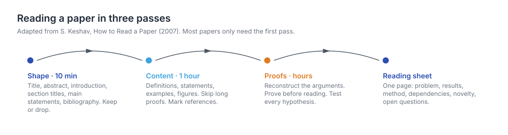

Guides · Reading
How to read a research paper
A three-pass method, a map of the results, and a one-page reading sheet. Read for what the paper proves and how, not line by line from page one.

Most researchers read far more papers than they write. Yet few of us were ever taught how to read one. The usual mistake is to start on page one and push through every line until the end. This is slow, tiring, and it rarely leaves a clear picture of what the paper actually does.
A paper is not a novel. It is a structured argument with a few main claims and a supporting network of definitions, lemmas and references. Read it the way it was built.
Decide why you are reading
Before opening the PDF, write one line: why am I reading this? The answer decides how deep you go.
- Screening. Is this paper relevant to my project at all? Ten minutes is enough.
- Using a result. I need Theorem 3.2 and its exact hypotheses. Go straight to it, then check every definition it depends on.
- Learning a method. I want to reuse the technique. Here you need the proofs.
- Refereeing or reviewing. You need everything, including what the paper does not say.
The three-pass method
The method below is adapted from S. Keshav, How to Read a Paper (ACM SIGCOMM Computer Communication Review, 2007). It works in every field.
First pass (10 minutes): the shape of the paper. Read the title, the abstract and the introduction. Read the section titles. Read the statements of the main theorems, but not their proofs. Look at the bibliography and note the references you already know. At the end you should answer five questions: what is the problem, what is the main result, what kind of paper is it (new theory, new method, survey, computation), what does it build on, and is it well written.
Second pass (one hour): the content. Read the paper in order, but skip the long proofs. Read every definition, every statement and every example. Draw the figures again if they matter. Mark the references you will need. At the end you should be able to explain the main results to a colleague, with their hypotheses, without looking.
Third pass (several hours): reconstruct the paper. Read the proofs. Better, try to prove each statement yourself before reading the proof. When the author writes "it is easy to see", check that it is easy. This is the pass where you find the hidden assumptions, the clever trick that makes the paper work, and sometimes an error.
Most papers only deserve the first pass. A few deserve the third. Being honest about this is how you keep up with a field.
Build a map of the results
A long paper is a graph. Each result depends on definitions and earlier results, some internal and some cited from other papers. Drawing this graph is the fastest way to understand the architecture of a paper.
- List the main theorems (often labeled Theorem A, B, C in the introduction).
- For each one, find the lemmas and propositions its proof uses.
- Mark the results imported from other papers with their exact reference, for example [12, Proposition 4.3].
- Mark the one or two steps where the real difficulty lies.
The map tells you what you can safely skip, and what you must understand to use the paper. It also shows you where new work is possible: a hypothesis that is used only once, a lemma that seems stronger than needed, a special case that is never discussed.
Keep a one-page reading sheet
For every paper that passes the second pass, write a short sheet. Keep the format fixed so that sheets are easy to compare months later.
- Reference. Authors, title, year, arXiv number or DOI.
- Problem. One or two sentences.
- Main results. Stated precisely, with hypotheses.
- Method. The key idea of the proof in a few lines.
- Dependencies. The results it imports, with exact references.
- What is new. Compared to what was known before.
- Open questions. Those stated by the authors, and your own.
- Connections. Links with your work or with other papers you know.
A reading sheet takes twenty minutes to write. It saves hours when you return to the paper, and it is the raw material of the introduction of your next article.
Read actively
- Work through an example. Take the simplest non-trivial case and compute everything in it. Many results become obvious in an example, and many errors become visible.
- Test the hypotheses. Remove one hypothesis and look for a counterexample. If you cannot find one, either the hypothesis is not needed or you have not understood the proof.
- Check the notation. Write a small glossary of the symbols. Papers often change notation between sections.
- Follow citations precisely. When a proof cites another paper, open the exact statement. A result is often cited in a form slightly different from the one that was proved.
When you are stuck
Getting stuck on a line is normal. Mark it, continue reading, and come back later. The answer is often three pages further, or in the next paper of the same authors. If you are still stuck, ask: a colleague, your supervisor, or the authors themselves. Researchers are usually happy to answer a polite and precise question about their work. The guide on research methodology explains how to write such an email.
Summary
- Know why you read before you read.
- First pass for the shape, second for the content, third for the proofs.
- Draw the map of the results and their dependencies.
- Write a one-page reading sheet for every paper you keep.
- Read with a pencil: examples, counterexamples, exact references.